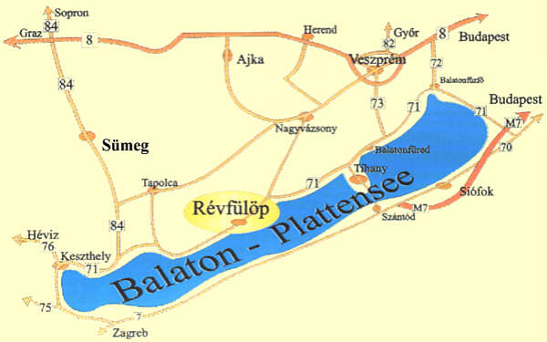
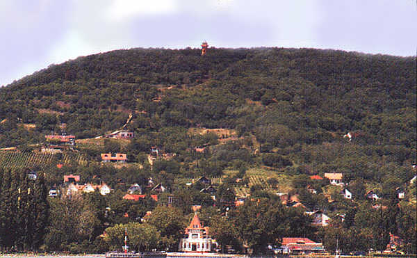
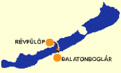

|
|
|

|
Révfülöp
ist eine der Gemeinden in der nördlichen Plattensee-Mitte,
die sich am ersten Steilhang direkt bis zum nördlichen
Plattenseeufer
erstreckt. Zwischen der Siedlung und dem Plattensee gibt es lediglich
einen in Ost-West Richtung verlaufenden schmalen Streifen für
die Eisenbahn und Landstrasse. Wir empfehlen diese Ortschaft
für
motorisierte Angler, die in der Nähe von
Schilfbeständen mal
hier, mal da einen aus der
fernen Amur eingebürgerten schilffressenden,
stämmigen Karpfen fangen
möchten.
|
|

|
|
Ohne
besondere Infrastruktur und produzierendes Gewerbe sind die sehr
wenigen Anwohner auf die vorbeikommenden Reisenden angewiesen.
Entsprechend teuer ist hier alles. Die meisten Häuser
gehören jedoch den Urlaubern selbst.
|
|
Révfülöps
einziges Produkt ist der Wein.
Man ist hier stolz darauf, ein Teil des berühmten
Weinbaugebiets
zu
sein. Es gibt hier sicherlich auch ehrliche Weinbauer unter den
Einheimischen, aber ihre kleinen Weinfelder vor Ort reichen
für den familiären Bedarf. Ungarn ist aber
für die einheimischen Weinkenner das Land der Weinpanscher. So
ist es kein Wunder, dass man in den Budapester CBA-Läden
(Nachfolger der früheren staatlichen
Lebensmittelgeschäftskette) im Jahre 2004 noch immer
weltberühmte Qualitätsweinsorten aus dem
Weinbaugebiet Badacsony für rd. 60 Cent pro Liter kaufen
konnte. Wenn die hiesigen Weinbauer den Wein - ohne Zwischenhandel -
auf der Landstrasse unter 30 Cent pro Liter verkaufen, dann kann es
auch kein echter Wein sein, sagt man in Ungarn. Billiger Weinstein aus
der Apotheke und Zucker dazu machen so manchen Weinbauer
erfinderisch und den Preis von 30 Cent pro Liter möglich. Den
30 Cent "Spitzenwein" verkaufen viele Gaststätten sogar in den
Vier- oder Fünf-Sterne-Hotels. Im sommerlichen
Gedränge fällt das niemandem auf, schon gar nicht,
wenn der Wein mit kalter Brause zum sog. Spritzer* gemischt wird.
Ungarn ist eben ein kleines Land mit vielen Weinbauern, so
können viele Verwandte und gute Nachbarn diesen Handelsweg
nachvollziehen.
*Der Spritzer ist ein Erfrischungsgetränk, das man bevorzugt
an heißen Tagen im Sommer trinkt. Es ist eine Mischung aus
Sodawasser oder Mineralwasser-Brause und Wein, vergleichbar mit unserer
Weinschorle. Man unterscheidet:
- Beim Langen Schritt
mischt man zu 1/3 Wein
2/3 Brause
- Beim Kurzen Schritt mischt
man
zu 2/3 Wein 1/3 Brause
Die Bezeichnung ist so, weil
man nach dem Kurzen Schritt auf dem Heimweg kürzere Schritte
macht.
|
Im
Werbeprospekt von Révfülöp findet man ein
Lob nach dem anderen, als wäre hier alles super -
unglaubwürdig! Das fängt bereits damit an, dass die
Gemeinde zwar nur 70 Jahre alt ist, aber seit über Tausend
Jahren vorhanden sein soll. ... Und
Révfülöp soll "... eines der wichtigen
kulturellen Zentren des Nordufers vom Plattensee" sein. Tatsache ist:
Révfülöp ist kein kulturelles Zentrum am
Plattensee - das sind und
im
Norden und ,
Zamárdi und Fonyód im Süden. Und wenn
man im Prospekt so was liest: "Das Baden, die Vergnügung
können mit kleineren Spaziergängen und mit
längeren Wanderungen abwechslungsreich gemacht werden." dann
liest man am besten gar nicht weiter, man fragt vielleicht, ob man das
Geld für die Werbeschrift nicht lieber einem richtigen
Übersetzer geben könnte. Viele Deutsche leben am
Plattensee als Dauerurlauber, die hätten viel Zeit zur
Übersetzungsarbeit.
|
|
Durchschwimmen des Balatons
- Ende Juli eine uralte
Volksgaudi
Strecke
Révfülöp-Balatonboglár
- Beim
größten
Süßwasser-Schwimmturnier Mitteleuropas gehen seit
Jahren mehrere Tausend Teilnehmer an den Start, um die alles
abfordernde Strecke von 5,2 km zu bewältigen. |
 |
Gefordert werden hier
keine Spitzenathleten. Die Schwimmer werden von
Rettungskräften in Schnellbooten begleitet - es geht um das
Dabeisein. Von Coca Cola gesponsert, erhalten Groß und Klein
je nach Erfolg mindestens ein Andenken an diesen Tag. Nicht zu
vergessen: Die trockenen, kräftigen Balatonweine,
z.B. die Marke Balaton, stammen aus den Weinkellern von
Balatonboglár, wo auch guter Sekt hergestellt wird. Ob die
Weinsorten am Südufer besser schmecken und ob sie
tatsächlich von Weintraben stammen, sei dahingestellt -
überall kann man ja nicht panschen.
Unser Fazit: Interessant ist die Ortschaft für Angler und
für
Amatörschwimmer, die einmal im Jahr teilnehmen
wollen an der
Volksgaudi
"Durchschwimmen des Balatons", sonst nichts wie weiter auf der
Landstrasse !
|
|
| |
|
Ungarn-Tourist Team

|
| |
| |
|